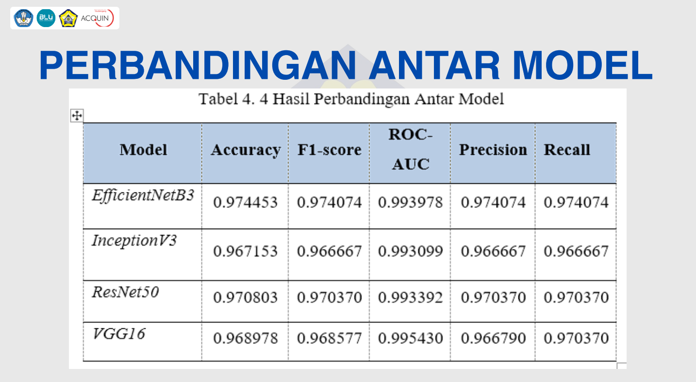
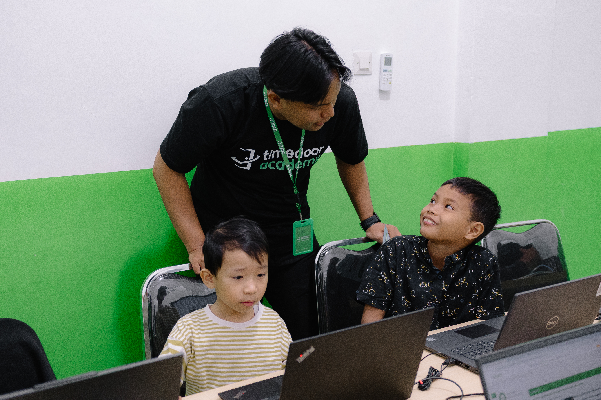
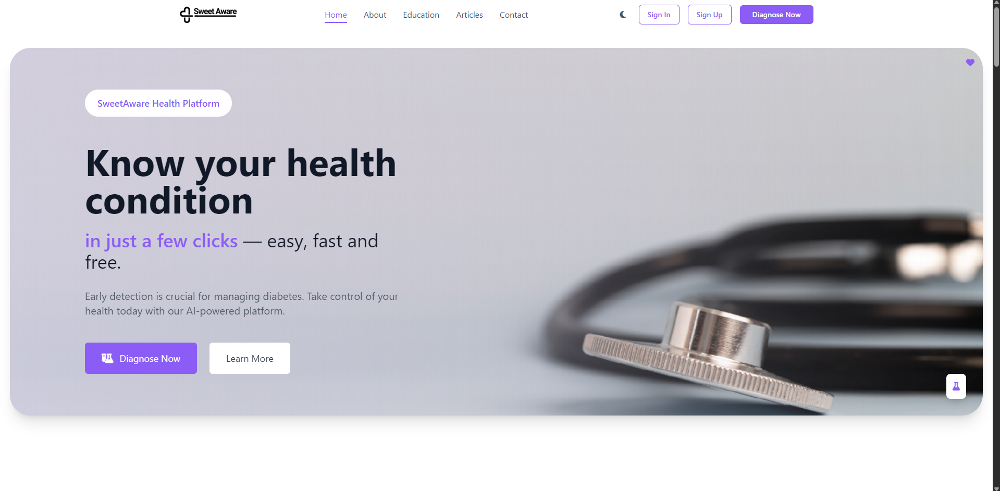
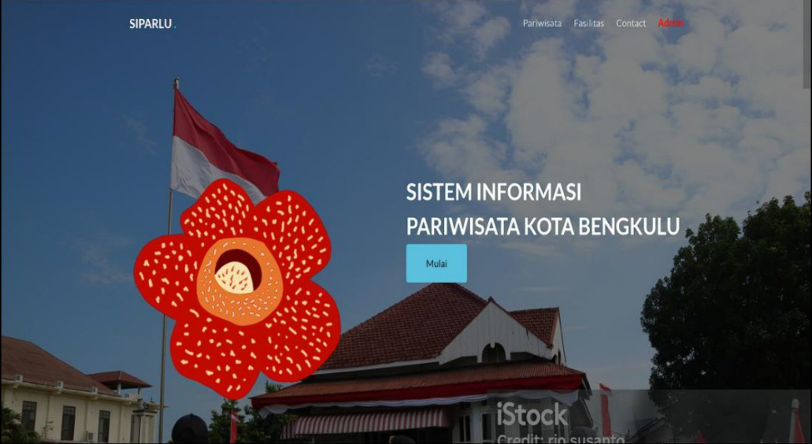

Hello, I'm
Fadlan Dwi Febrio
I'm a
Bachelor Of Informatics | Coding Camp Machine Learning Engineer 2025 | Interest on Software Engineering, Graphic Designer, Full stack, Machine Learning, etc.
Get To Know Me
About Me

Who Am I?
As a recent Informatics graduate with a strong interest in Software Engineering, Machine Learning, Artificial Intelligence, Data Science, Graphic Design, as well as Full Stack, Front End, and Back End development, I bring a combination of leadership, creativity, adaptability, and innovation. I am a curious, proactive, and highly motivated individual with a strong desire to continuously learn and develop my skills, particularly in technology and digital solution development.
I enjoy exploring new ideas, learning technologies such as Machine Learning and Artificial Intelligence, and transforming those ideas into practical and applicable solutions. During high school, I was entrusted with the role of Chairperson of DELTA and contributed to initiating ATHENA as a platform for high-achieving students. I also have experience and achievements at the national level, including winning 1st Place in a food innovation competition and receiving an award in a national-level poster competition.
These experiences helped me develop strong skills in leadership, teamwork, communication, creative thinking, problem-solving, and taking initiative. I am comfortable working both independently and collaboratively, and I am always open to challenges and opportunities to learn new things, particularly in the evolving fields of Software Engineering, Machine Learning, AI, and software development.
What I Can Do
My Skills
Software Engineering
Developing reliable and maintainable software solutions by applying software engineering principles, problem-solving techniques, system design, testing, and structured development processes. Languages: HTML · Python · JavaScript · PHP · SQL · Etc. Tools: GitHub · VS Code · LARAVEL · Etc.
Data Analyst
Analyzing and transforming raw data into meaningful insights through data cleaning, exploration, visualization, statistical analysis, and interpretation to support data-driven decision making. Languages: Python · SQL · Etc Tools: Pandas · NumPy · Matplotlib · Seaborn · Jupyter Notebook · Etc
Fullstack Dev
Building complete web applications by developing responsive front-end interfaces and reliable back-end systems, including API integration, database management, authentication, and server-side functionality. Languages: HTML · CSS · JavaScript · PHP · SQL · Etc. Tools: React · Node.js · Express.js · MySQL · Git · GitHub · VS Code · Etc.
Artificial Intelligence
Exploring and developing artificial intelligence solutions by applying intelligent algorithms, data processing, and AI techniques to create systems capable of learning, analyzing, and solving real-world problems. Languages: Python · SQL Tools: TensorFlow · PyTorch · Scikit-learn · Pandas · NumPy · Jupyter Notebook
Machine Learning
Developing machine learning models by preparing and preprocessing datasets, selecting suitable algorithms, training models, and evaluating their performance to identify patterns and make data-driven predictions. Languages: Python · SQL Tools: Scikit-learn · TensorFlow · Pandas · NumPy · Matplotlib · Jupyter Notebook
Graphic Design
Creating creative and visually engaging designs by applying principles of composition, typography, color theory, and visual communication to produce professional digital content. Languages: - Tools: Adobe Photoshop · Adobe Illustrator · Canva · Figma
My Recent Work
Projects


Get In Touch
Contact Me
Let's Work Together
Have a project, collaboration, or opportunity? Feel free to contact me.